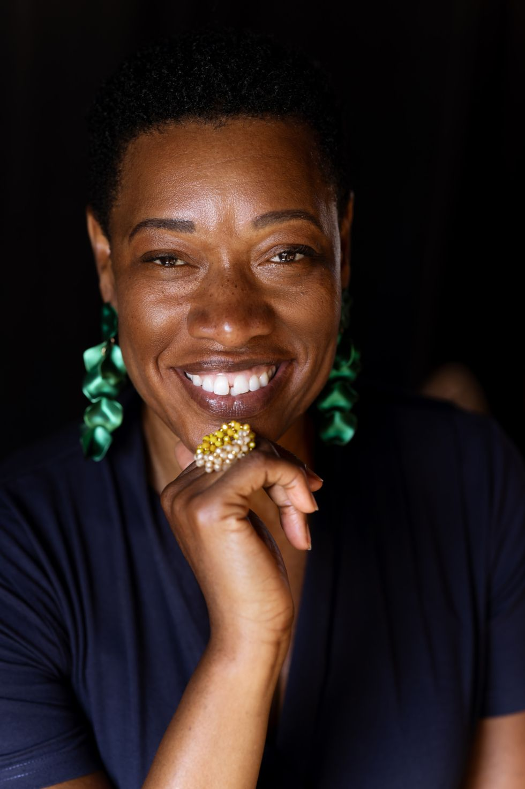
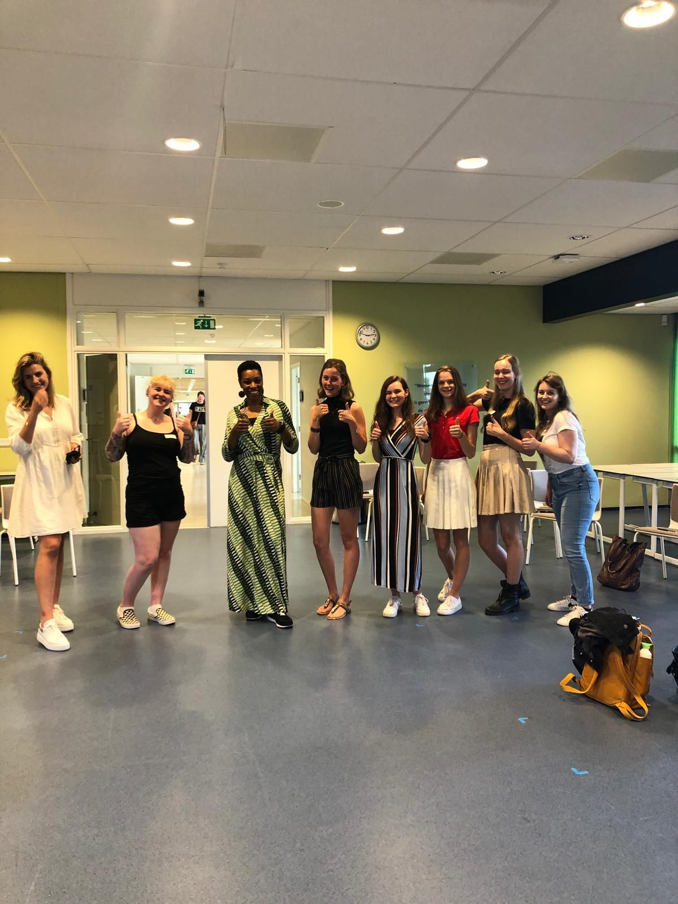

Over Mireille
Mireille Ollivieira
Spreker, leiderschapstrainer en gecertificeerd Deep Democracy-instructor. Master Communicatiewetenschap.

Wie is Mireille?
Twee werelden, één verhaal
Mireille groeide op in twee werelden die elkaar raakten, maar niet altijd begrepen. Die ervaring is niet de achtergrond van haar werk; het is haar werk. Als Zwarte vrouw die beide werelden kent, brengt ze ze samen vanuit de overtuiging dat mensen systemen veranderen, en dat dat alleen kan in verbinding.
Haar kracht is dat ze mensen kan zien en waarderen als geen ander, en waar nodig liefdevol kan confronteren. Ze biedt veiligheid en plezier, ook in de gesprekken die anderen liever vermijden.
Wat is Homecomingcoach?
Homecomingcoach is specialist in coaching, faciliteren van groepen en trainen van mensen. Wij bedienen particulieren, het MKB en de grootzakelijke markt. Dit bureau is ontstaan uit liefde voor het vak van leren en gegroeid door enthousiaste klanten. In leiderschap coacht, traint en faciliteert Mireille Ollivieira met veel plezier leidinggevenden en medewerkers in het leren. ‘Ik begeleid jou primair bij persoonlijk leiderschap en integriteit, dat is waar het begint en eindigt’.
Daarnaast geeft Homecomingcoach succesvolle trainingen die allemaal inclusie en communicatie als basis hebben. Deep Democracy is er één van: een methode die ons helpt de wijsheid van de minderheid te willen horen en er dan ook daadwerkelijk iets mee te doen. Dit alles om te komen tot goede gesprekken, de beste besluiten en het durven aangaan van conflict.
Wie is Mireille Ollivieira?
Ze werkte 15 jaar als strategisch communicatieadviseur en woordvoerder bij de gemeente. Ze is geboren in Paramaribo en vertegenwoordigt in veel academische settings een minderheid als het gaat om kleur. Ze voegt regelmatig een niet-alledaags perspectief toe: dat van de zwarte Caraibische vrouw opgegroeid in een beschermde, groene omgeving, rijk aan nationaliteiten en sociale lagen: de Bijlmer.
Mireille is opgeleid als communicatiewetenschapper aan de Universiteit van Amsterdam. Ze bestudeerde verschillende methoden die het hele plaatje in beeld brengen, zoals coaching, systemisch werken en Factor C, een methode voor communicatie in beleid. En natuurlijk Deep Democracy: ‘het brengt alles bij elkaar wat ik ooit geleerd heb! De minderheidsstem waarderen als alle andere, dat wilde ik kunnen. Het is inmiddels verslavend’.
Wat drijft haar?
Getriggerd door de beelden van wanhoop en afbraak uit de Bijlmermeer van de jaren ’80, besloot Mireille op haar 13e: ‘er is ook nog een andere kant van het verhaal en die ga ik vertellen’. Het dreef haar om de thema’s beeldvorming en diversiteit op te pakken. Op de middelbare school waren dat gesprekken over feminisme, op de Universiteit vragen over criteria van het studentencorps en bij Randstad Uitzendbureau was dat door geduldig ‘lastige’ onderwerpen te agenderen. De rode draad: ze zoekt actief naar en vertolkt bij afwezigheid het tegengeluid. Dat leidt tot begrip. En het leidt ook tot conflict. Gelukkig is ze daar niet bang voor. Integendeel, ze gaat het aan en vindt er veel plezier in om het samen op te lossen. Het toverwoord is daarbij: aandacht. En o ja: lef.
Wat doet ze?
- Trainer Deep democracy
- Faciliteren van (lastige) gesprekken of conflicten
- Coaching individueel en teams
- Leermanager (vrouwelijk) leiderschap
- Spreker
Achtergrond
- Gecertificeerd Deep Democracy-instructor
- Associate partner van Human Dimensions
- Master Communicatiewetenschap
- Ruim tien jaar ervaring met geweldloze communicatie
- Leercoach van managementgroepen bij de gemeente Amsterdam
Mireille in actie
Trainen, spreken en faciliteren

Training 
Werken met gesprekskaarten 
Deep Democracy 
Leiderschapstraining 
Na een workshop 
Energie in de groep
Een lezing, training of facilitatie boeken?
Vertel wat er speelt in jouw team of organisatie. We denken graag mee over de vorm die past.